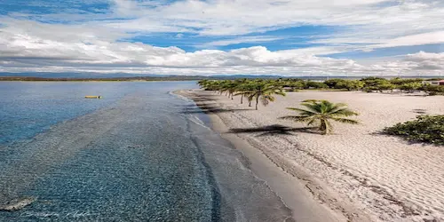

Data
Area: 48,671 sq km
Population: 11.3 million
Capital: Santo Domingo
Languages: Spanish
Currency: Dominican Peso (DOP)
Time Zone: UTC-4 (AST)
Calling Code: +1-809, +1-829, +1-849
Internet TLD: .do
Weather
Temperature: 28 °C
Conditions: Warm / Mostly Sunny
Wind: 12 km/h
Wind Chill: